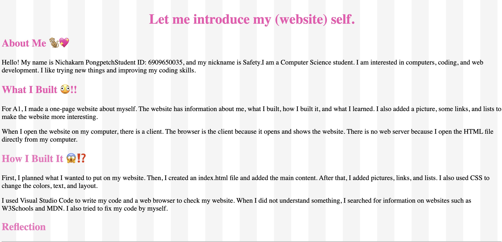
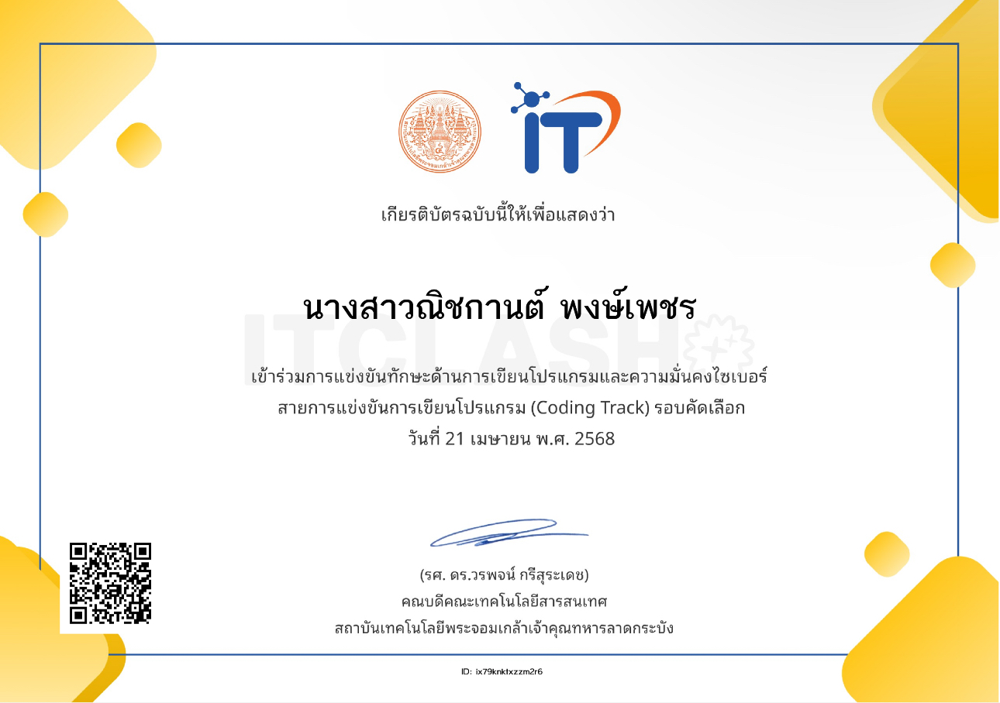

My Portfolio

CS100 A1: My First Learning Portfolio
Type: Course Assignment
Date: 1 July 2007
Role: Web Developer
Description: I created my first learning portfolio website to introduce myself, share my interests, and present my learning journey as a Computer Science student.
Skills: HTML, CSS
Reflection
- What I did: I created a personal website using HTML and CSS to introduce myself and organize my information.
- What I learned: I learned how to structure a webpage with HTML and style it with CSS.
- Challenge: I found it challenging to organize the content and make the website look good. I solved this by trying different layouts and styles.
- Next step: I want to improve my CSS skills and learn JavaScript to make my website more interactive.
Evidence:
Assignment 1

Coding Track Competition – KMITL
Type: Certificate
Date: 21 April 2025
Role: Participant
Description: I participated in the Coding Track competition, which focused on programming and cybersecurity. This experience helped me explore my interest in coding and learn more about computer technology.
Skills: Programming, Problem-solving, Logical Thinking, Cybersecurity
Reflection
- What I did: I participated in the Coding Track competition and took part in the selection round.
- What I learned: I learned more about programming and cybersecurity and gained experience in a competitive environment.
- Challenge: The challenge was applying my knowledge to programming problems. I tried to think logically and solve each problem step by step.
- Next step: I want to improve my programming skills, practice more coding problems, and learn more about cybersecurity.
Evidence:
My Certificate